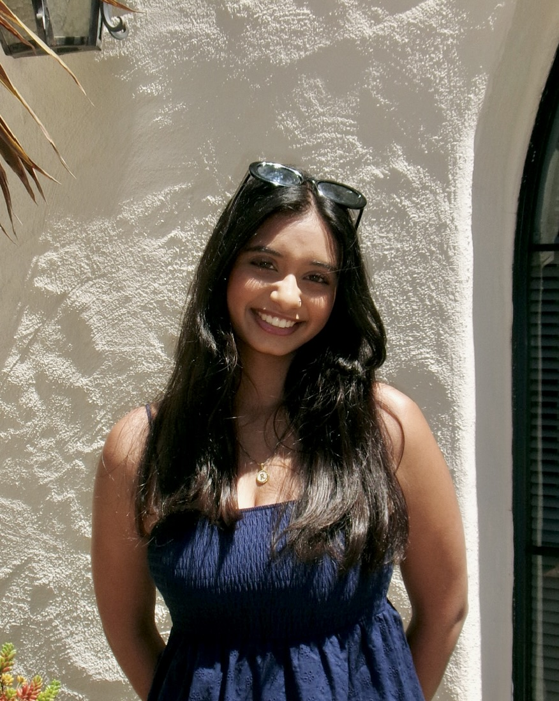

Welcome to My Website

Howdy! My name is Reena Vollala and I am a junior computer science major at Texas A&M. I enjoy working with others and building innovative solutions to problems. With a mix of creativity and technical skills, I am someone who will always bring in ideas and energy to the group! Furthermore, I am a curious and driven problem-solver who is constantly looking for ways to improve and learn. Apart from my technical skills, some fun facts about me is that I love exploring new places to eat and new music to listen to. To know more about me visit my LinkedIn!